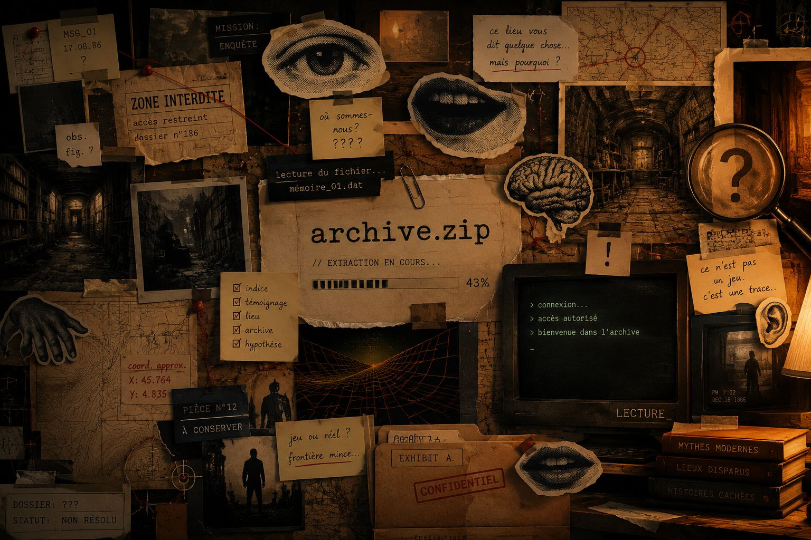
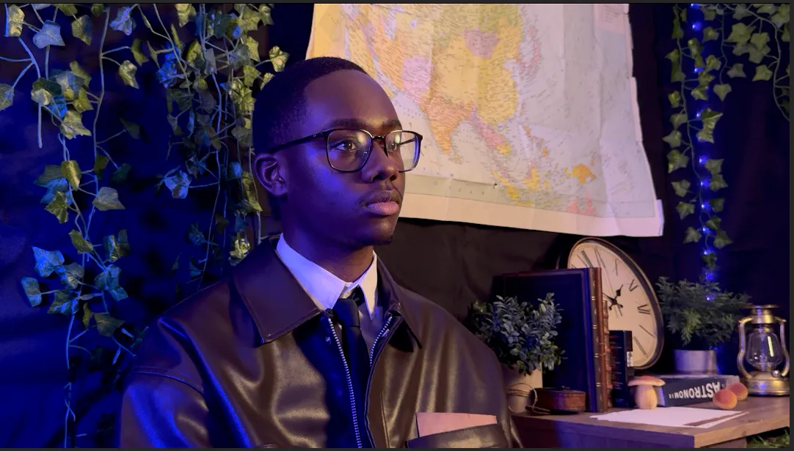

Quand l'histoire réelle devient le décor de vos jeux préférés
Tchernobyl, la Guerre Froide, Hiroshima... des faits vrais qui ont façonné des mondes fictifs.

© Archive Point Zip — Dossier comparatif
Les vérités cachées derrière vos jeux vidéo préférés
Archive Point Zip explore les liens entre l'histoire réelle et les univers fictifs des jeux vidéo. Chaque vidéo est un dossier comparatif entre un fait historique documenté et le jeu qu'il a inspiré.
- Les catastrophes réelles derrière les mondes post-apo
- Les expériences scientifiques à l'origine des dystopies
- Les lieux iconiques que vous avez visités... sans y être allé
- Les faits historiques qui ont façonné vos jeux préférés
Ceux qui fouillent le passé pour vous
- Onya JosephYoutubeur & Monteur
- Malet YoannDA & Ingé Son
- Seck N'boumbéStratégie Marketing
- Marvillet LucasMonteur Cadreur
- Bonnin ThomasStratégie Marketing
- Marchel AurélieSupervision Générale
- Anais SeghilaniDéveloppement Web

© Archive Point Zip — La rédaction
Derniers Shorts
Ce que vous en pensez
Les vrais commentaires de notre communauté
« J'ai regardé la vidéo sur Tchernobyl et Fallout... j'ai dû vérifier si c'était vrai tellement c'était précis. Incroyable travail. »
« La façon dont vous reliez les faits historiques aux mécaniques de jeu... personne ne fait ça aussi bien. Abonné depuis le début. »
« J'ai montré la vidéo Viking à mon prof d'histoire. Il l'a passée en cours. Voilà le niveau. »
« Le dossier MK-Ultra m'a scotché. Je pensais que Control était pure fiction... Plus jamais je regarderai ce jeu pareil. »
« La production est dingue pour une chaîne de cette taille. Le montage, la recherche... c'est du travail sérieux. Respect. »
« Enfin une chaîne qui traite les gamers comme des gens intelligents. Chaque vidéo m'apprend quelque chose de réel. »